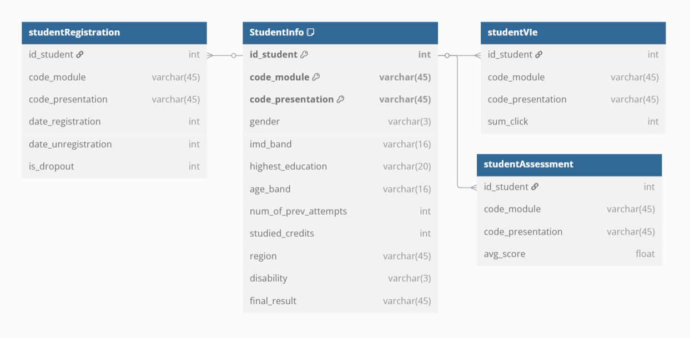
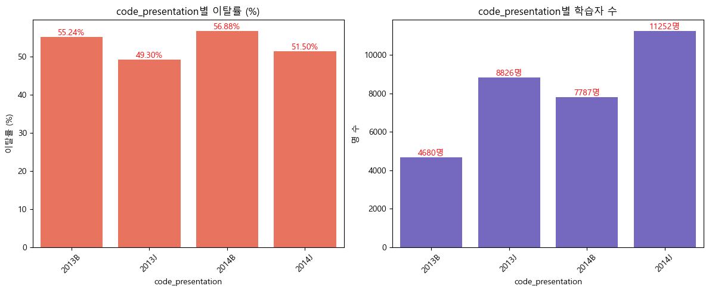
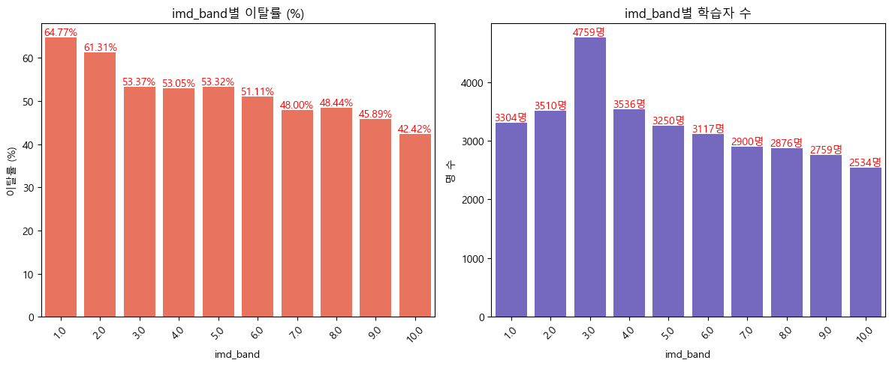
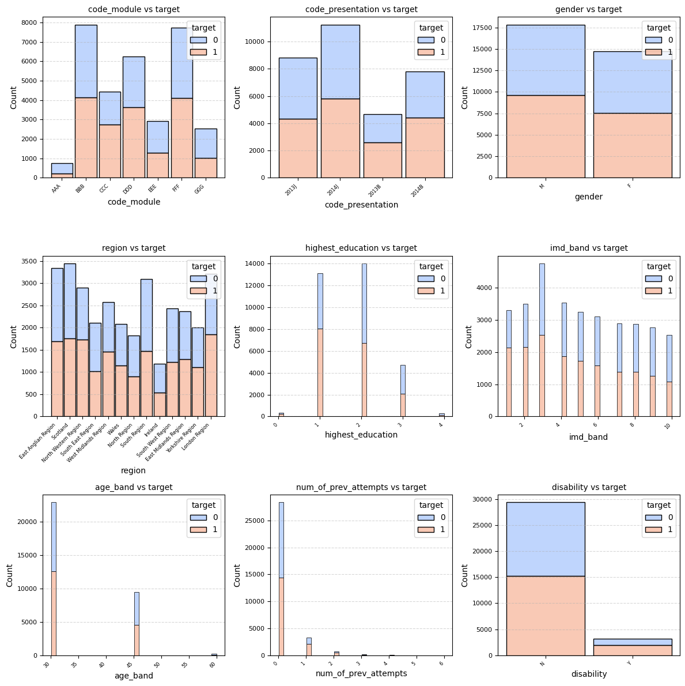
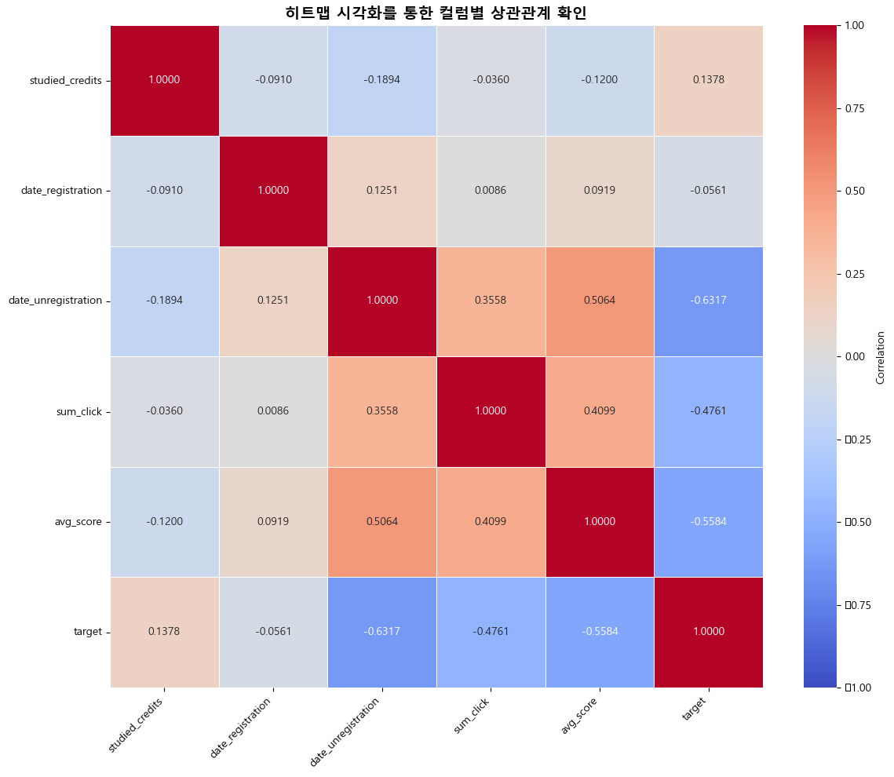
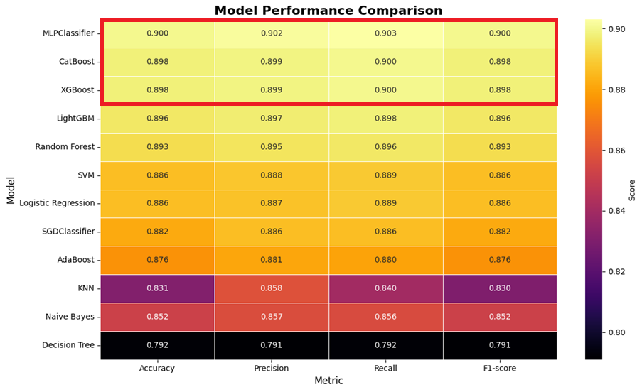
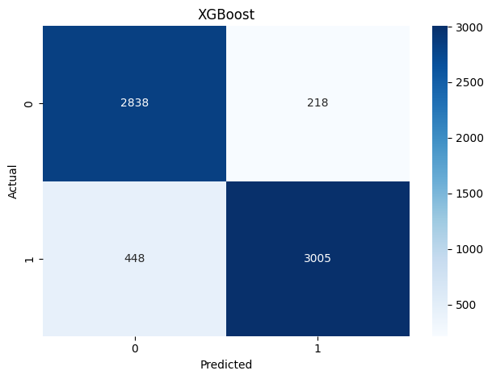
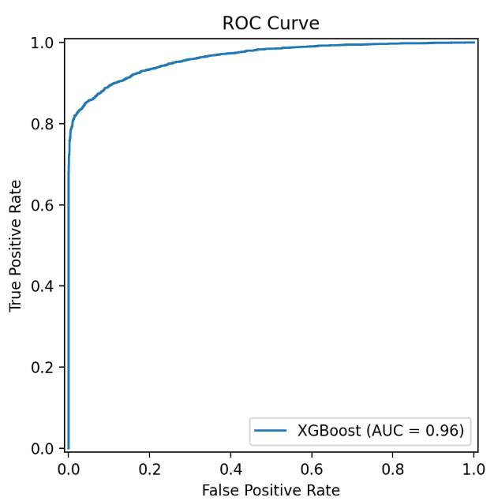

📌 프로젝트 목표
- 본 프로젝트의 목표는 MOOC(Massive Open Online Course) 환경에서 학습자의 이탈(dropout) 가능성을
조기에 예측하는 머신러닝 모델을 개발하여 교수설계자가 학습자 유지(retention) 전략을 수립할 수 있도록 지원하는 것
📌 Why This Project?
- MOOC는 접근성·개방성·확장성 측면에서 교육혁신을 이끌었지만,현실적으로 이탈률이 85~90%(완료율 10% 미만)에 달하는 문제 발생
- 그 원인은 다음과 같다:
- 자기주도 기반 학습에서 발생하는 동기 저하
- 비동기 수업의 몰입도 감소와 단절감
- 학습 진도 관리 어려움
- 학습자가 즉각적인 피드백을 받기 어려운 구조
📌 My Main Contributions
- 데이터 탐색 및 테이블 병합 구조 설계+ 이탈 기준 정의 및 학습 레이블링 전략 수립
- 데이터 전처리 및 품질 개선
- 탐색적 데이터 분석(EDA)
- 여러 머신러닝/딥러닝 모델 학습 및 성능 비교
📌 Other Tasks Included
- 데이터 병합 과정에서 학생별 학습 패턴 분석
- Figma 화면 설계
🔍 데이터 탐색 및 테이블 병합 구조 설계 + 타겟변수 생성

- Kaggle OULAD 데이터셋의 4개 테이블(StudentInfo, StudentRegistration, StudentAssessment, StudentVle)을 분석
- id_student 기준 병합 전략 설계 및 실행
- 온라인 활동 수치(총 클릭 수, 주차별 활동량 등)와 평가 점수를 파생 변수로 생성 → 예) sum_click, avg_score, last_click_week
- 이탈 예측을 위한 타겟 변수(target)는 final_result를 기반으로 다음과 같이 이진 분류값으로 변환
- 💡Fail 을 이탈(target =1)로 간주한 근거
온라인 학습 환경에서의 학습자 이탈은 단순한 중도 포기(Withdrawn) 뿐만 아니라,
학습 목표 미달로 인해 학업을 완료하지 못한 경우까지 포함하여 정의될 수 있음(Kloft et al., 2014)
| final_result 값 | 설명 | 이탈 여부 | target 값 |
|---|---|---|---|
| Pass | 학습자가 모듈을 수료하고 합격 기준을 충족하여 정상적으로 완료한 경우 | 이탈 ❌ | 0 |
| Distinction | 매우 우수한 성적으로 모듈을 우등 졸업(Distinction)한 경우 | 이탈 ❌ | 0 |
| Fail | 수료는 하였으나 학업 성과가 미달되어 낙제한 경우 | 이탈 ⭕ | 1 |
| Withdrawn | 학기 중 중도에 수강을 철회하거나 학업을 중단한 경우 | 이탈 ⭕ | 1 |
🔍 데이터 전처리 및 품질 개선
- 1️⃣ 이상치 처리: 모델 학습의 정확성을 높이기 위해 데이터 전처리 과정에서 두 가지 조건에 해당하는 이상치 제거
- 학습 결과가 'Fail'인 경우 수료를 했음에도 불구하고 수강 취소일(date_unregistration)에 존재
→ 성적과 수강 상태 간 불일치로 간주하여 제거 - 수강 등록일(date_registration)이 결측치(데이터 없음)이면서 최종 결과(final_result)가 'Withdrawn'인 경우는
등록 정보가 없는 탈락 케이스로 판단하여 제거
# 조건: final_result가 Fail이고, date_unregistration이 null이 아님
condition1 = (merged_df["final_result"] == "Fail") & (merged_df["date_unregistration"].notnull())
# 해당 조건을 만족하는 행 제거
merged_df = merged_df[~condition1]
# 조건 정의: date_registration이 NaN이고 final_result가 Withdrawn인 경우
condition = (merged_df["date_registration"].isna()) & (merged_df["final_result"] == "Withdrawn")
# 해당 조건에 맞는 행 제거
merged_df = merged_df[~condition]
date_unregistration: 수강 취소 여부만 나타내는 컬럼이므로, 결측값은 취소되지 않음을 의미하는 9999로 대체imd_band(지역 사회 경제 지수): 범주형 변수로 최빈값으로 대체date_registration: 수치형 변수로 평균값으로 대체
💡9999 로 대체한 이유
본 컬럼은 일정한 기간(ex. 30일)에 관한 데이터이므로, 수강이 아예 취소되지 않음을 표현하기 위해 어떤 날짜 데이터에서도 나올 수 없는 “의미없는 큰 값”인 9999을 사용
highest_education: 교육 수준을 범주형으로 간주하여 서열화 인코딩 적용 (No Formal Quals → 0, ..., Post Graduate Qualification → 4)age_band: 연령 구간을 대표값(중앙값)으로 대체 (예: 35-55 → 45)imd_band: 사회 경제적 취약 정도를 1~10으로 서열화하여 수치로 변환
→ 모든 문자열 값은 사전에
.str.strip().str.title()을 통해 정제 후 인코딩을 수행 (자세한 인코딩 값은 코드 참고)
# 1) highest_education 학력별로 부여
education_order = {
"No Formal Quals": 0,
"Lower Than A Level": 1,
"A Level Or Equivalent": 2,
"He Qualification": 3,
"Post Graduate Qualification": 4}
#2) age_band 중간 값으로 변경
age_map = {
"0-35": 30,
"35-55": 45,
"55<=": 60} # 55세 이상이므로 60 또는 65로 추정
# 3) 취약계층 서열화
imd_order = {
"0-10%": 1,
"10-20": 2,
"20-30%": 3,
"30-40%": 4,
"40-50%": 5,
"50-60%": 6,
"60-70%": 7,
"70-80%": 8,
"80-90%": 9,
"90-100%": 10}
- 범주형 변수: OneHotEncoder를 통한 원-핫 인코딩
- 연속형 수치 변수: StandardScaler를 적용하여 정규화 처리
# 1. 원래 컬럼 순서 저장
original_columns = merged_df.columns.tolist()
# 2. ColumnTransformer 설정 - nan값 대체
na_transformer = ColumnTransformer([
("category_imputer", SimpleImputer(strategy="most_frequent"), ['imd_band']),
("number_imputer", SimpleImputer(strategy="mean"), ['date_registration'])
], remainder="passthrough")
# 3. 처리 대상 및 passthrough 대상 정리
processed_columns = ['imd_band', 'date_registration']
passthrough_columns = [col for col in merged_df.columns if col not in processed_columns]
# 4. fit_transform 적용
na_values_array = na_transformer.fit_transform(merged_df)
# 5. DataFrame으로 변환 + 컬럼 순서 복원
na_values_df = pd.DataFrame(na_values_array, columns=processed_columns + passthrough_columns)
na_values_df = na_values_df[original_columns] # 순서 복원!
na_values_df
#6. ColumnTransformer 적용
X = na_values_df.drop(columns='target').values
# X = X.astype('float32')
y = na_values_df['target'].values
# y = y.astype(int)
X.shape, y.shape
fe_transformer = ColumnTransformer([
("category_ohe", OneHotEncoder(), [0, 1, 3, 4, 5, 6, 7, 8, 10,16]),# feature의 index로 지정. # index는 앞에 했던 배열로 적용해줘야함.
("number_scaler", StandardScaler(), [9,11,12,13,14,15]) #feature Scaling은 연속형끼리 같은 방식을 사용 (standard or MinMax 중 택1)
])
# DataFrame이 입력일 경우 컬럼명이나 컬럼 index를 지정할 수 있다.
# ndarray가 입력일 경우 컬럼(feature) index를 지정.
new_merged_df = fe_transformer.fit_transform(X)
print(new_merged_df)
🔍 탐색적 데이터 분석(EDA)
- 컬럼별 이탈자에 대한 비율 및 전체비율 시각화 결과
- 히트맵 시각화를 통한 컬럼별 상관관계
- 컬럼별 학습자 이탈률 및 학습자 분포 시각화
- ✔️ 수강 강의 회차(Code Presentation)별 이탈률:
두개의 년도를 비교해보면 1학기(=B) 이탈률이 2학기(=J) 이탈률보다 높은 것으로 나타났음.
반면, 실제 강의를 듣는 학습자 수는 하반기(=J)에 더 많은 것으로 보이며, 실제적으로 하반기 학습자들이 강의도 많이 수강하면서
이탈률은 상반기에 비해 낮은 것으로 나타남. (💡 하반기 수강자들의 이런 탈률이 더 낮다!)
- ✔️ 학습자가 거주한 지역의 복합 빈곤 지수별 이탈률:
지역 복합 빈곤 지수별 이탈률을 비교한 결과, 빈곤 지수가 낮을수록 이탈률은 높아지는 경향을 보이는 것으로 나타남.
한편, 3수준(53.37%)에 해당되는 학습자 수(4759명)가 가장 많기 때문에, 실제 이탈률 수는 1수준과 2수준과 거의 비슷한 수준인 것을 알 수 있음.
(💡빈곤 지수가 낮을수록 이탈률이 높다!
즉, Mooc강의는 무료 강의가 더 높아서 빈곤 지수가 높을수록 학습 기회를 놓지 않으려고 했을 것으로 해석될 수 있음)



🔍 여러 머신러닝/딥러닝 모델 학습 및 성능 비교
- 적용 모델:
- Decision Tree, Random Forest, SVM
- XGBoost, CatBoost, LightGBM
- MLPClassifier(PyTorch 기반 MLP도 실험)
- 평가지표: Accuracy, Precision, Recall, F1-score
- Recall을 핵심 지표로 설정 → 실제 이탈자를 놓치는 False Negative 최소화
- XGBoost 하이퍼파라미터 튜닝 및 최종 모델 선정
- GridSearch / RandomizedSearch 조합으로 Hyperparameter 조정
- n_estimators=1000
- learning_rate=0.01
- max_depth=6

| Confusion Matrix | ROC Curve |
|---|---|
 |
 |